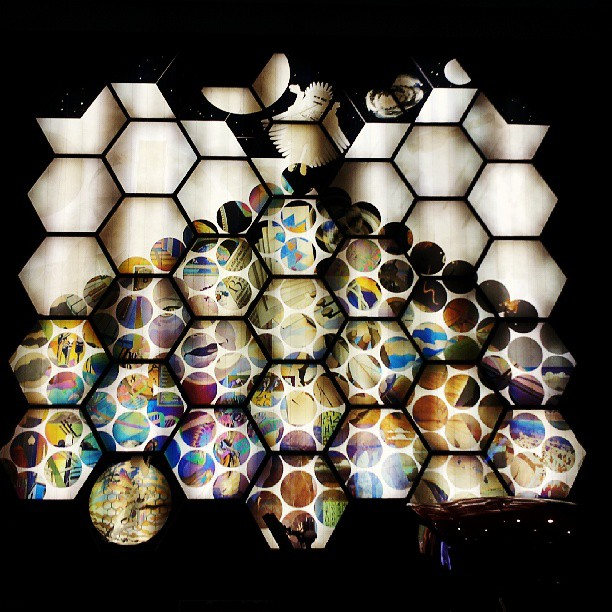
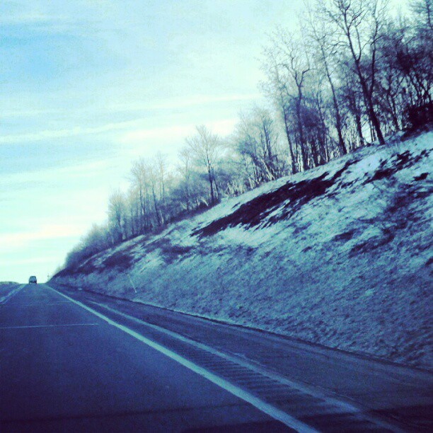

|
 |
|  |

I am simply a small town gal who is taking over the city of Philadelphia one coffee shop at a time. Currently in my Junior year at Saint Joseph's University, I have been trained to live greater. My passion is to serve the needs of others and I always opt to find the beauty in daily life. While I am not struggling to claim a bit of technological literacy, I enjoy focusing in on my creative scope of the world. I am a classically trained fine artist whose heart has recently been claimed by photography. I am known for having a spirited personality which is captured in my featured writing in the Opinions Section of the Hawk Newspaper. Even though I am a twenty year old college kid, I am reminded often that I am an old spirit for my love of a cozy sweater, a cup of soup, and a hug from a pug.